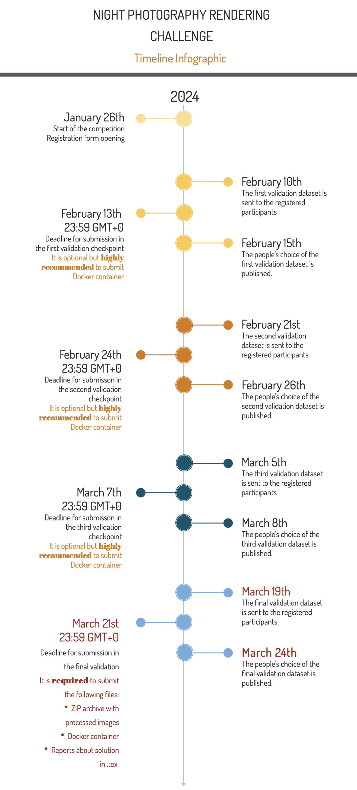

Motivation for this challenge
Cameras apply onboard processing that renders captured sensor images (i.e., a raw image) to their photo-finished output encoded in a standard color space (e.g., an sRGB image). Images captured at night present unique challenges that are not found in most daytime images. For example, daytime images assume a single illumination, while night images often have multiple illuminants, many of which are visible in the scene. The unique lighting environment present in night photography makes it unclear the best illumination correction to use when rendering a night photo. In addition, tone-curves and other photo-finishing strategies used to process daytime images might not be appropriate for night photos. Moreover, common image metrics that are correlated with perceptual quality (e.g., SSIM and LPIPS) may not be suitable for night images. Finally, there is significantly less published research focused on image processing for night images. As a result, there are fewer "best practices" for processing night images. Encouraging research targeting night photography is the motivation for this challenge.
Challenge Goal and Uniqueness
Given the nature of our challenge, we do not have ground truth images. Our challenge involves developing a rendering procedure that produces "visually pleasing" photographs over a wide range of night images. As a result, submissions will be judged through mean opinion scores from observers who will visually compare the submissions. A panel of professional photographers will further judge top solutions.
Contest data
Participants will be given access to raw-RGB images of night scenes. These images have been captured using the same sensor type. Images will be encoded 16-bit PNG files with additional meta-data provided in JSON files.
The contest will start with an initial 100 images for participants to use for developing their algorithms. All data is available after registration (see form at the bottom of the page). Additional images will be made available during the challenge; see information below on evaluation and leaderboard.
As extra data, you can use the Cube++ dataset, which was collected using the same cameras. The dataset is described in this article and can be downloaded from here.
Also we have provided code for the baseline algorithm and its demo on GitHub.
Evaluation/Leadersboard
The evaluation will consist of three validation checkpoints during the duration of the contest and one final checkpoint at the very end of the contest. Note that only the final checkpoint is mandatory – the validation checkpoints are optional. This means that new participants can join at any time before the final submission deadline as long as they fulfill other challenge requirements.
The mean opinion score for the validation checkpoints and the final checkpoint will be obtained through visual comparison that will be carried out using Yandex Toloka (similar to Mechanical Turk). Toloka users will rank their preferred solutions in a forced-choice manner. Note that Toloka will mainly rely on observers from Europe and Russia to perform the image ranking. As a result, there may be a cultural bias in terms of the preferred image aesthetics by the observers. Note that Toloka users will not know the identity of the participants. Example of this evaluation is available here.
The results obtained during the validation checkpoints provide challenge teams feedback on their solutions' quality. During each validation checkpoint, 50 new test images will be given. Each participating team will be able to send up to two distinct solution image sets. Each of these solution sets should consist of exactly 50 images: one solution image per test image. Having two validation sets is intended to help participants test the behavior of different solutions.
For the final submission, 100 test images will be made available. Only a single solution image set for the 100 test images will be allowed for the final submission. Among these 100 images, only 50 images will be used for further evaluation. The indices of the selected images will be the same for all participants and given in advance in an encrypted form, with the password being given only after the contest. Additionally, during the final checkpoint, the submitted solutions ranked among the top-10 based on the Toloka scores – and that have results reproducible by the provided code in its Docker environment – will proceed to the professional judge stage. In this final stage, professional photographers provide their selection. We will also ask judges to provide feedback on their decision. The consensus from the professional photographers will be used to select the final winners.
We ask challenge participants to understand this type of evaluation is subjective in nature. We are designing the challenge to be as fair as possible, given the nature of the task. The challenge organizers reserve the right to modify the evaluation procedures if we feel it is necessary to improve the challenge.
Submissions
As mentioned above, for each evaluation check point, users will be allowed to submit 50 images in JPEG format (high quality compression). Each team can submit at most two solutions. Submission will be available via Google form, which will be sent to registered teams.
We expect images of size 1300x866 for landscape orientation and 866x1300 for portrait one, in other cases we will rescale them automatically using simple linear methods. You can see an example of an expected JPG file in folder data on challenge repository.
For the final evaluation, a submission will have to contain 100 processed images in the JPEG format, as well the runnable solutions with a Dockerfile for reproducing the submitted results. Among these 100 images, only 50 images will be used for further evaluation. The indices of the selected images will be the same for all participants and given in advance in an encrypted form, with the password being given only after the contest.
Timeline
Organizers might change leaderboard deadlines to improve challenge, but final deadline remind the same, due to connection with AIM'2021 timeline.
Reporting
In order to be eligible for the prizes, the participants will be required to send code and reports about their solutions in the form of short papers during the submission. If this report is not submitted, the participants that would otherwise win a prize will be passed over.Prizes
Winners will recieve winner certificate and will have an opportunity to submit their paper to AIM'2021 and participate in common report which also will be submitted to ICCV. Also winners will be awarded with money prize:
| First place | $1000 | |
| Second place | $650 | |
| Third place | $350 |
Q&A
If you still have any questions, please send an email: nightimagingcommittee@gmail.com
Organizers
- Egor Ershov
- Denis Shepelev
- Vasily Tesalin
- Alex Savchik
- Arseniy Terekhin
- Illya Semenkov
- Nikola Banić
- Karlo Koščević
- Marko Subašić
- Sven Lončarić
- Michael S. Brown
Sponsorship
Registration form